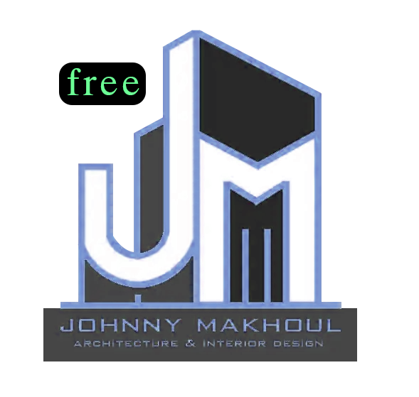

v2.4 Production Ready
שרטוט מהיר, מדויק ואוטומטי
חיסכון של עד 70% בזמן העבודה ב-AutoCAD
מערכת סרגלי כלים ייעודית מבוססת AutoLISP המיועדת למשרדי אדריכלות, הנדסה ושרטטים. שליטה מלאה בשרטוט קירות, מעקות, מפלסים דינאמיים, הצללות וחישובי כמויות.
EDITIONS
בחר את החבילה המתאימה לך
החבילה הנבחרת
Starter Kit
FREE
JohnnyTools Free
גרסת בסיס הכוללת סרגל כלים אחד לשרטוט קירות בסיסי, כלי מפלסים ומעקב שעות עבודה.

החבילה הנבחרת
Professional Suite
PRO
JohnnyTools PRO
המערכת המלאה הכוללת 11 סרגלי כלים, שכפול בלוקים חכם, חישובי שטחים, פיתוח שטח והצללות.
MATRIX
השוואת גרסאות מלאה — PRO מול Free
| כלי / קטגוריה באוטוקאד | גרסת Free (סרגל אחד) | גרסת PRO (11 סרגלים) |
|---|---|---|
| כלים כלליים ותבניות RE, FL, JFixFont, TMP, SSK, JVID | בסיסי (RE, FL, FontFix) | מלא + Smart Sketch ותבניות |
| שרטוט אדריכלי (Architectural) DW, Stair (SS), Railing (Rail) | שרטוט קירות בלבד (DW) | קירות + מדרגות + מעקות |
| ניהול בלוקים (Block Tools) JohnnyInsert, DUPBLK | הוספת בלוקים בלבד | הוספה + שכפול חכם (DUPBLK) |
| כלי מפלסים (Level Tools) LV, ABS, REST | ||
| מעקב שעות עבודה (Work Log) Check In, Check Out, Show Log | ||
| כלי מידות מהירים (DIM Tools) Quick Dim (SD), SUB Dim (SubD) | ||
| שליטה וניהול האצ'ים והצללות (Hatch Tools) HF, HR, HB, HB-All, PL60, CL, CH | ||
| מספור אוטומטי וסידור בלוקים (Number Tools) JNUM, Dcir, JNMDRW, JJ, JNumBlk | ||
| פיתוח שטח ושיפועים (Landscaping) INC_ATT, SLOPE_AUTO, CALC_REL/ABS | ||
| רישוי, חישוב שטחים וכמויות (Permitting) CA, CLN, AT, AT2, AutoArea, CountBlocks | ||
| קווי עזר לחתכים וחזיתות (XLines & Guidelines) XL-Ref, XL-Vert, XL-AutoBuilding, GLC, GLE |